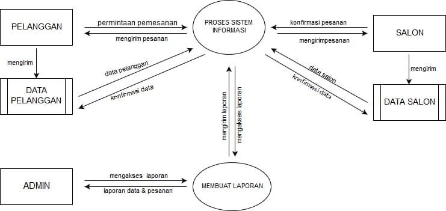
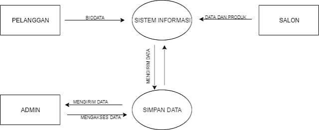

Contoh DFD dilengkapi Penjelasannya

Pengertian DFD (Data Flow Diagram)
DFD (Data Flow Diagram) merupakan gambaran alur sistem. DFD biasanya banyak digunakan oleh orang-orang yang bekerja di bagian sistem informasi. Termasuk software enginer, programmer, dan lainnya.Jenis – Jenis DFD yang Sering Digunakan
DFD Level 0
Jenis yang pertama ini sering disebut juga dengan diagram konteks. DFD ini merupakan diagram yang terdiri dari metode yang dpaat menjelaskan secara umum lingkup sistem informasi yang akan dibuat.DFD Level 1
Jenis DFD yang kedua ini merupakan lanjutan dari diagram konteks. Pada DFD digambarkan secara lebih rinci dan lengkap karena proses utama dipecah menjadi beberapa sub dengan fungsi masing-masing.DFD Level 2
DFD level 2 akan lebih lengkap lagi mengulas proses-proses yang ada dalam lingkup sebuah sistem informasiBeberapa Contoh DFD
Apa saja contohnya, cek selengkapnya di bawah ini.Contoh DFD Level 0
 Pada gambar DFD di atas kita bisa menguraikan tahap-tahap dari sebuah sistem, yaitu :- Tahapan atau proses mengakses biodata pelanggan dan pendaftaran treatmen salon
- Tahapan atau proses melakukan pemesanan atau booking
- Tahapan atau proses melakukan transaksi pembayaran dan melakukan rating
Contoh DFD Level 1
 Penjelasan singkat :- Pada tahap ini pelanggan akan memasukan biodata diri seperti nama, alamat, no handphone, dan alamat email
- Salon akan menginputkan daftar treatmen seperti potong rambut, perawatan wajah, dan lainnya dengan harga yang sudah ditentukan
- Kemudian sistem akan menyimpan data dari pelanggan untuk memudahkan pelanggan saat melakukan pemesanan
- Selanjutnya admin akan mengakses semua data tersebut ke sistem informasi
Contoh DFD Level 1 proses 2
 Penjelasan :
Penjelasan :
- Selanjutnya yaitu tahapan melakukan pemesanan
- Sistem akan dengan sendirinya akan melakukan input pemsanan dari pelanggan setelah pelanggan menginput order salon dengan melakukan pemesanan treatmen
- Admin akan menyalurkan orderan kepada salon
- Dan alon akan melakukan konfirmasi dan melayani orderan tersebut.
Contoh DFD Level 1 proses 3
 Penjelasan :
Penjelasan :
- Tahapan ini kita akan melihat bahwa admin melakukan konfirmasi detail pesanan kepada salon
- Salon akan mendapatkan daftar orderan dari pelanggan yang diberikan oleh admin
- Salon akan datang ke pelanggan untuk melakukan service
- Setelah mendapatkan pelayanan pelanggan melakukan transaksi pembyaran
- Transaksi bisa berupa tunai atau transfer di muka terlebih dahulu
- Lalu pelanggan memberikan rating atau review kepada salon
Contoh DFD Penjualan
Selanjutnya berikut ini contoh DFD studi kasus sistem informasi penjualan online :DFD Level 0
 Penjelasan :
Penjelasan :
- DFD di atas menjelaskan tentang beberapa proses :
- Pendataan produk
- Pemesanan
- Dan pembayaran
DFD Level 1
 Penjelasan :
Penjelasan :
- mendata produk
- Data tersebut akan dicek kelengkapannya oleh sistem informasi
- Jika sudah lengkap maka data akan disimpan pada database
- Setelah itu produk akan ditampilkan pada customer
DFD Level 1 proses 2
 Penjelasan :
Penjelasan :
- DFD di atas lebih merinci kegiatan proses pemesanan
- Pertama customer memilih produk yang akan dibeli
- Data produk diambil dari database
- Setelah produk dipilih, customer harus mengisi data pemesanan dan akan disimpan pada database pemesanan
- Lalu admin akan mendapatkan laporan pemesanan
- Sedangkan customer akan mendapatkan nota total pesanan
DFD Level 1 proses 3
 Penjelasan :
Penjelasan :
- DFD ini menjelaskan tentang proess pembayaran
- Pertama, customer harus login dulu menggunakan id pemesanan dan password yang diperoleh dari database pemesanan
- Lalu customer mengisi data konfirmasi pembayaran. Data tersebut akan disimpan pada database pembayaran
- Admin akan menerima report pembayaran dan customer akan mendapatkan nota bukti pembayaran
DFD Level 2
 Penjelasan :
Penjelasan :
- Admin memasukan data produk dan sistem akan mengecek kelengkapannya
- Setelah itu data akan disimpan pada database produk
- Admin juga dapat melakukan update dan delete produk
Contoh DFD Perpustakaan
DFD Level 0
 Penjelasan :
Penjelasan :
- Informasi dikirimkan oleh pengguna ke dalam sistem informasi yang dihasilkan oleh sistem
- Informasi yang dikirimkan anggota ke dalam sistem yaitu informasi data buku dan SMS request.
- Sedangkan informasi yang dihasilkan oleh sistem kepada anggota adalah data buku dan sms informasi.
- Informasi yang dikirimkan ke petugas ke dalam sistem yaitu info data buku, data anggota, data transaksi peminjaman, pengembalian, sms, dan info laporan apa yang akan dicetak
DFD Level 1
 Penjelasan :
Penjelasan :
- DFD di atas menjelaskan proses yang dilakukan oleh sistem untuk petugas dan anggota
- Proses tersebut di antaranya : mengolah data buku, melakukan pencarian buku, mengelola data anggota, melakukan pencarian anggota, mentatat transaksi peminjaman dan pengembalian, data sms keluar dan masuk.
DFD Level 2
 Penjelasan :
Penjelasan :
- Diagram tersebut menjabarkan lebih rinci tentang proses mengelola data buku dan mengelola data anggota.
- Petugas dapat melakukan input data buku, mengubah data buku, dan menghapus data buku.
- Data yang diproses akan tersimpan di database
DFD Level 2.1
 Penjelasan :
Penjelasan :
- Diagram ini menjelaskan alur pengelolaan data anggota
- Petugas dapat melakukan input, mengubah, dan menghapus data anggota
- Lalu data akan terseimpan di database
Fungsi DFD
DFD memiliki fungsi yang cukup penting sebelum pembuatan software ataupun aplikasi, di antaranya yaitu :- Untuk menggambarkan sistem
- Untuk membuat pemodelan sistem
- Penyampaian rancangan sistem kepada programmer atau developer agar lebih mudah merancangnya
Penutup
Itulah beberapa contoh dari DFD yang bisa kawan-kawan jadikan referensi untuk belajar membuat berbagai macam DFD. Terima kasih semoga bermanfaat dan jangan lupa share ke temanmu yang lainnya juga.
Sumber : \https://badoystudio.com/contoh-dfd/